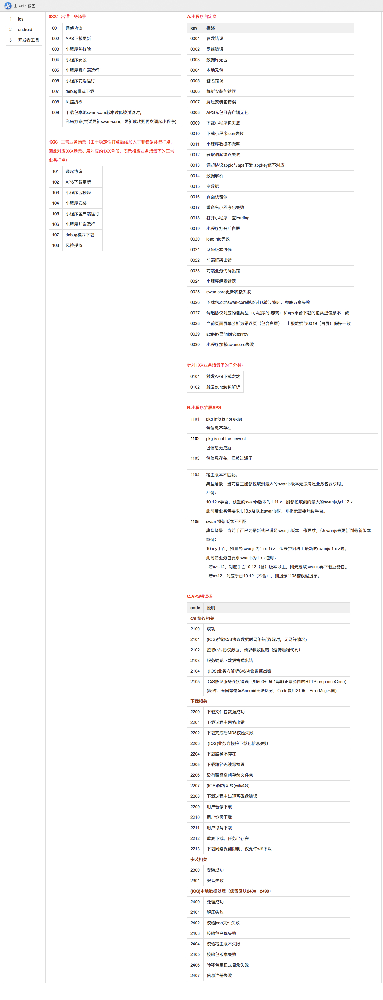

调起协议
小程序各端代码开源后，会接入不同宿主，使小程序可以在各个宿主上正常运行。调起小程序的协议也是开源的一部分，协议的一部分，宿主使用该协议该协议时，协议头需要使用宿主本身的，并且协议中不能包含与手百强关联的信息。
名词解释
各端：包括小程序前端框架 swan.js，ios和android，小程序工具。宿主：指可以运行百度智能小程序的 App，例如：贴吧，b 站等。协议头：协议头为 App 的唯一调用标识调用标识。
协议规范
规范示例：
`schemeHead://swan/{appKey}/pages/home/home/?a=aa&b=bb&_hostPrivateInfo=encodeURIComponent(JSON.stringify({from: '1001', ext: {}}))`
协议结构
schemeHead
协议头，每个宿主需要使用自己的协议头。
例如百度是：baiduboxapp，贴吧是：tiebaclient。
后面紧跟着://这个是固定不变且必须的。
swan/{appKey}/
swan 代表小程序，这个是固定不变的。
{appKey} 是小程序的唯一标识，在b端申请小程序时，会产生appkey。每个小程序是不一样的。
开发者工具生成的appkey，会带dev标识规则，如: TZzPY8qVvX97uzIH4L2SnY0g_dev123，其中123为自增数字，每次在工具中点预览按钮，生成二维码时，数字会自增。具体数字在工具中获取
/pages/home/home/
调起小程序后打开的页面，非必填，默认打开首页。
a=aa&b=bb
调起小程序时，打开的页面时需要传递的 query 信息，非必填，值需要 encodeURIComponent。可在小程序 App 的onshow、onLaunch 获取到。
_hostPrivateInfo
供宿主使用，传递信息到宿主端内的同时，不会透传给小程序，例如：渠道号等。
保留字
在协议拼接的query中，不能使用以下保留字段：
| 序号 | 字段名称 |
|---|---|
| 1 | baiduboxapp |
| 2 | _baiduboxapp |
| 3 | callback |
| 4 | upgrade |
| 5 | slog |
| 6 | caller |
| 7 | next |
| 8 | prev |
| 9 | delaytime |
| 10 | appid |
| 11 | appId |
| 12 | aey |
| 13 | appkey |
| 14 | entry |
| 15 | loading |
| 16 | senior |
| 17 | oauthType |
| 18 | app |
| 19 | website |
| 20 | smartapp |
小程序错误码对照表

风险提示
app的下载和任意调起，有可能存在远程任意应用安装和任意调用app私有组件，并传递参数，造成恶意漏洞利用。